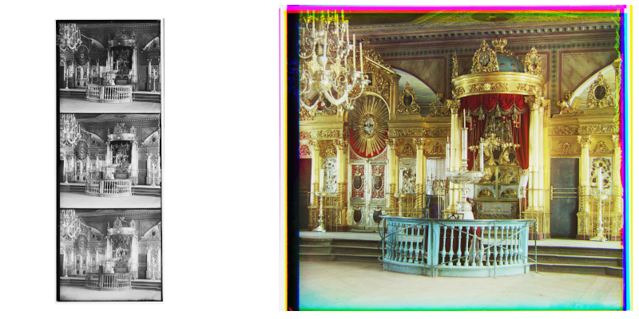
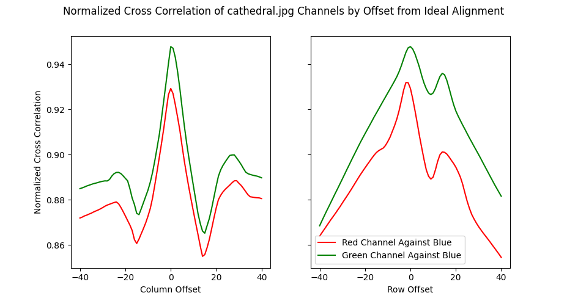
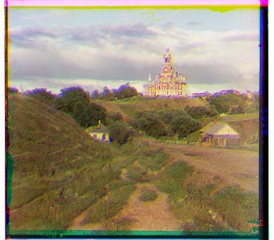
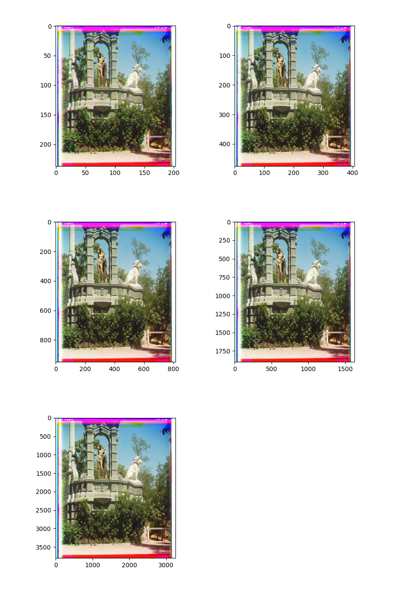
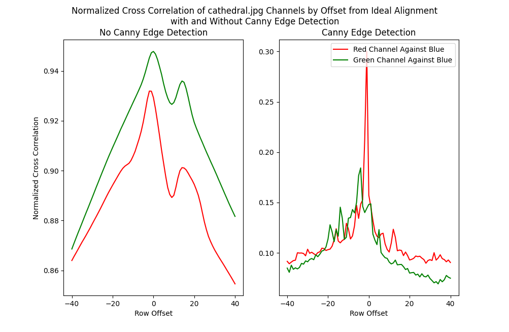
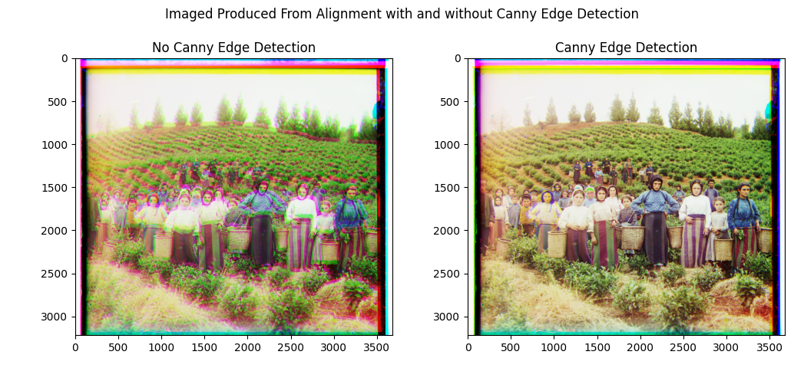

The purpose of this project is to take black and white images where each color channel is a separate image, and combine the channels to properly align them.

To start, we took the following approach (which you can find in misc/base_approach.py):
Plotting the normalized cross correlation performance metric, we can see that there is a peak at the “optimal” offset:

And this is the result produced:

To address the performance issues, we implement pyramid search as follows:
The first pass is fast because the image is small, and all subsequent alignments only need to check a small range of offsets because one can assume the images are already roughly aligned. This therefore balances the tradeoff between accuracy and speed where using small images produces worse accuracy but better speed, and large images produce better accuracy for worse speeds.
For sculpture.tif, we get the following steps for alignment:
PLOT IMAGE HERE 
This also lets us improve run time from >10 minutes to 6.916s on sculpture.tif
To improve reliability of alignment, we apply Canny edge detection to each of the channels using opencv prior to aligning the images. Canny edge detection finds edges in an image finding intensity gradients that fall within a given range and filtering the results to only include well connected edges.
Applying canny edge detection is beneficial for reliable alignment for two main reasons. The first of which is that because only the edges are considered for alignment, actual intensity within those edges are not considered. This is especially beneficial in noisy scenes and when there is greater deviation between color channels. The second benefit of applying an edge detector is that it produces a sharper peak for optimal alignment.
For cathedral.jpg, you can see the peak becomes sharper when canny edge detection is applied.

You can also see a noticeable improvement in quality of results on harvesters.tif.
